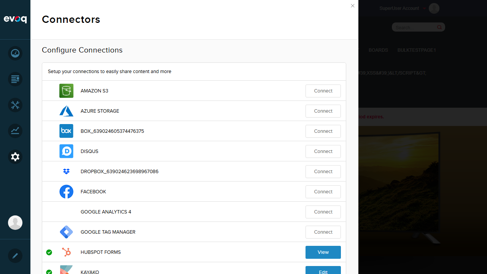
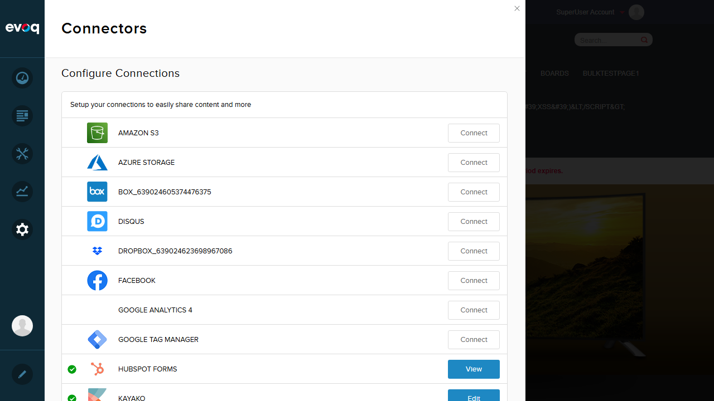

Test 1: Verify Tracking Script Appears in Page HTML Head
PASS
Steps:
- Configure Google Analytics 4 connector with Measurement ID: G-TEST12345
- Navigate to the home page
- Inspect page HTML head section for GA scripts
Evidence:

JavaScript evaluation found 2 GA scripts in the page head:
{
"totalScripts": 11,
"gaScriptsFound": 2,
"gaScripts": [
{
"index": 1,
"src": "https://www.googletagmanager.com/gtag/js?id=G-TEST12345",
"type": "external"
},
{
"index": 2,
"content": "window.dataLayer = window.dataLayer || [];
function gtag(){dataLayer.push(arguments);}
gtag('js', new Date());
gtag('config', 'G-TEST12345');",
"type": "inline"
}
]
}

 
